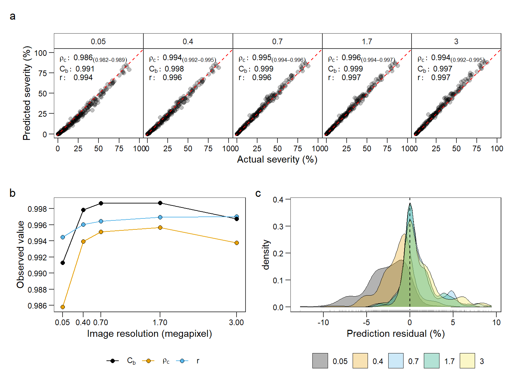

Analysis
1 Packages
library(pliman) # plant image analysis
# |========================================================|
# | Tools for Plant Image Analysis (pliman 0.3.0) |
# | Author: Tiago Olivoto |
# | Type 'vignette('pliman_start')' for a short tutorial |
# | Visit 'https://bit.ly/3eL0dF3' for a complete tutorial |
# |========================================================|
#
# Attaching package: 'pliman'
# The following object is masked _by_ '.GlobalEnv':
#
# symptomatic_area
library(tidyverse) # data manipulation and plots
# -- Attaching packages --------------------------------------- tidyverse 1.3.1 --
# v ggplot2 3.3.3 v purrr 0.3.4
# v tibble 3.1.2 v dplyr 1.0.6
# v tidyr 1.1.3 v stringr 1.4.0
# v readr 1.4.0 v forcats 0.5.1
# -- Conflicts ------------------------------------------ tidyverse_conflicts() --
# x dplyr::filter() masks stats::filter()
# x dplyr::lag() masks stats::lag()
library(patchwork) # plot arrangement
library(DescTools) # concordance correlation coefficient
library(rio) # import/export data
library(ggthemes) # Themes for ggplot2
library(GGally) # create pairwise ggplots
# Registered S3 method overwritten by 'GGally':
# method from
# +.gg ggplot2
library(ggrepel) # repel text2 Installing pliman
To install the released version of pliman from CRAN type:
install.packages("pliman")The latest development version of pliman can be installed from the GitHub repository. The installation process requires the devtools package, which needs to be installed first. If you are a Windows user, you should also first download and install the latest version of Rtools.
if(!require(devtools)) install.packages("devtools")
After devtools is properly installed, you can install pliman by running the following code. Please, note that the installation will also download the dependencies required to run the package.
devtools::install_github("TiagoOlivoto/pliman")Them, load pliman by running
library(pliman)3 Helper functions
# concordance correlation coefficient
get_ccc <- function(df, predicted, real){
if(is.grouped_df(df)){
df %>%
group_modify(~get_ccc(.x, {{predicted}}, {{real}})) %>%
ungroup()
} else{
predicted <- pull(df, {{predicted}})
real <- pull(df, {{real}})
cor <- CCC(real, predicted, na.rm = TRUE)
data.frame(r = cor(real, predicted),
pc = cor$rho.c[[1]],
lwr_ci = cor$rho.c[[2]],
upr_ci = cor$rho.c[[3]],
bc = cor$C.b)
}
}
# heper function to plot the CCC in ggpairs()
custom_ccc <- function(data, mapping,...){
data2 <- data
data2$x <- as.numeric(data[,as_label(mapping$x)])
data2$y <- as.numeric(data[,as_label(mapping$y)])
data2$group <- data[,as_label(mapping$colour)]
correlation_df <- data2 %>%
group_by(group) %>%
summarize(estimate = round(as.numeric(DescTools::CCC(x, y)$rho.c[1]),2))
ggplot(data=correlation_df, aes(x=1,y=group, color = group))+
geom_text(aes(label = paste0("rho[c]: ", estimate)),
data = correlation_df,
parse = TRUE,
size = 4)
}
custom_smoth <- function(data, mapping, method="lm", ...){
p <- ggplot(data = data, mapping = mapping) +
geom_point(alpha = 0.7,
shape = 21,
size = 2.5,
stroke = 0.01,
color = "black") +
geom_abline(color = "red",
intercept = 0,
size = 0.7,
slope = 1,
linetype = 2)
p
}
# set the ggplot2 theme
theme_set(theme_bw())4 Rater effect on palette selection
4.1 Disease
4.1.1 Bean angular spot
sev_bean_1 <-
symptomatic_area(img_pattern = "F",
img_healthy = "h1",
img_symptoms = "s1",
img_background = "b1",
dir_original = "data/01-bean-angular-spot/originals",
parallel = TRUE)
sev_bean_2 <-
symptomatic_area(img_pattern = "F",
img_healthy = "h2",
img_symptoms = "s2",
img_background = "b2",
dir_original = "data/01-bean-angular-spot/originals",
parallel = TRUE)
sev_bean_3 <-
symptomatic_area(img_pattern = "F",
img_healthy = "h3",
img_symptoms = "s3",
img_background = "b3",
dir_original = "data/01-bean-angular-spot/originals",
parallel = TRUE)
sev_bean_4 <-
symptomatic_area(img_pattern = "F",
img_healthy = "h4",
img_symptoms = "s4",
img_background = "b4",
dir_original = "data/01-bean-angular-spot/originals",
parallel = TRUE)
bind_bean <-
bind_cols(sev_bean_1 %>% select(1,3) %>% rename(r1 = symptomatic),
sev_bean_2 %>% select(3) %>% rename(r2 = symptomatic),
sev_bean_3 %>% select(3) %>% rename(r3 = symptomatic),
sev_bean_4 %>% select(3) %>% rename(r4 = symptomatic)) %>%
mutate(disease = "Bean angular spot", .before = 1)4.1.2 Rice brown spot
sev_rice_1 <-
symptomatic_area(img_pattern = "F",
img_healthy = "h1",
img_symptoms = "s1",
img_background = "b1",
dir_original = "data/02-rice-brownspot/originals",
parallel = TRUE)
sev_rice_2 <-
symptomatic_area(img_pattern = "F",
img_healthy = "h2",
img_symptoms = "s2",
img_background = "b2",
dir_original = "data/02-rice-brownspot/originals",
parallel = TRUE)
sev_rice_3 <-
symptomatic_area(img_pattern = "F",
img_healthy = "h3",
img_symptoms = "s3",
img_background = "b3",
dir_original = "data/02-rice-brownspot/originals",
parallel = TRUE)
sev_rice_4 <-
symptomatic_area(img_pattern = "F",
img_healthy = "h4",
img_symptoms = "s4",
img_background = "b4",
dir_original = "data/02-rice-brownspot/originals",
parallel = TRUE)
bind_rice <-
bind_cols(sev_rice_1 %>% select(1,3) %>% rename(r1 = symptomatic),
sev_rice_2 %>% select(3) %>% rename(r2 = symptomatic),
sev_rice_3 %>% select(3) %>% rename(r3 = symptomatic),
sev_rice_4 %>% select(3) %>% rename(r4 = symptomatic)) %>%
mutate(disease = "Rice brown spot", .before = 1)
4.1.3 Wheat tan spot
sev_wheat_1 <-
symptomatic_area(img_pattern = "F",
img_healthy = "h1",
img_symptoms = "s1",
img_background = "b1",
dir_original = "data/03-wheat-tanspot/originals",
parallel = TRUE)
sev_wheat_2 <-
symptomatic_area(img_pattern = "F",
img_healthy = "h2",
img_symptoms = "s2",
img_background = "b2",
dir_original = "data/03-wheat-tanspot/originals",
parallel = TRUE)
sev_wheat_3 <-
symptomatic_area(img_pattern = "F",
img_healthy = "h3",
img_symptoms = "s3",
img_background = "b3",
dir_original = "data/03-wheat-tanspot/originals",
parallel = TRUE)
sev_wheat_4 <-
symptomatic_area(img_pattern = "F",
img_healthy = "h4",
img_symptoms = "s4",
img_background = "b4",
dir_original = "data/03-wheat-tanspot/originals",
parallel = TRUE)
bind_wheat <-
bind_cols(sev_wheat_1 %>% select(1,3) %>% rename(r1 = symptomatic),
sev_wheat_2 %>% select(3) %>% rename(r2 = symptomatic),
sev_wheat_3 %>% select(3) %>% rename(r3 = symptomatic),
sev_wheat_4 %>% select(3) %>% rename(r4 = symptomatic)) %>%
mutate(disease = "Wheat tan spot", .before = 1)
4.1.4 Tobacco xylella
sev_tobacco_1 <-
symptomatic_area(img_pattern = "F",
img_healthy = "h1",
img_symptoms = "s1",
img_background = "b1",
dir_original = "data/04-tobacco-xylella/originals",
parallel = TRUE)
sev_tobacco_2 <-
symptomatic_area(img_pattern = "F",
img_healthy = "h2",
img_symptoms = "s2",
img_background = "b2",
dir_original = "data/04-tobacco-xylella/originals",
parallel = TRUE)
sev_tobacco_3 <-
symptomatic_area(img_pattern = "F",
img_healthy = "h3",
img_symptoms = "s3",
img_background = "b3",
dir_original = "data/04-tobacco-xylella/originals",
parallel = TRUE)
sev_tobacco_4 <-
symptomatic_area(img_pattern = "F",
img_healthy = "h4",
img_symptoms = "s4",
img_background = "b4",
dir_original = "data/04-tobacco-xylella/originals",
parallel = TRUE)
bind_tobacco <-
bind_cols(sev_tobacco_1 %>% select(1,3) %>% rename(r1 = symptomatic),
sev_tobacco_2 %>% select(3) %>% rename(r2 = symptomatic),
sev_tobacco_3 %>% select(3) %>% rename(r3 = symptomatic),
sev_tobacco_4 %>% select(3) %>% rename(r = symptomatic)) %>%
mutate(disease = "Tobacco xylella", .before = 1)
4.1.5 Olive peacock eye
sev_olive_1 <-
symptomatic_area(img_pattern = "F216",
img_healthy = "h1",
img_symptoms = "s1",
img_background = "b1",
dir_original = "data/05-olive-peacock-eye/originals",
parallel = TRUE)
sev_olive_2 <-
symptomatic_area(img_pattern = "F216",
img_healthy = "h2",
img_symptoms = "s2",
img_background = "b2",
dir_original = "data/05-olive-peacock-eye/originals",
parallel = TRUE)
sev_olive_3 <-
symptomatic_area(img_pattern = "F216",
img_healthy = "h3",
img_symptoms = "s3",
img_background = "b3",
dir_original = "data/05-olive-peacock-eye/originals",
parallel = TRUE)
sev_olive_4 <-
symptomatic_area(img_pattern = "F216",
img_healthy = "h4",
img_symptoms = "s4",
img_background = "b4",
dir_original = "data/05-olive-peacock-eye/originals",
parallel = TRUE)
bind_olive <-
bind_cols(sev_olive_1 %>% select(1,3) %>% rename(r1 = symptomatic),
sev_olive_2 %>% select(3) %>% rename(r2 = symptomatic),
sev_olive_3 %>% select(3) %>% rename(r3 = symptomatic),
sev_olive_4 %>% select(3) %>% rename(r4 = symptomatic)) %>%
mutate(disease = "Olive peacock eye", .before = 1)
4.1.6 Soybean rust
sev_soybean_1 <-
symptomatic_area(img_pattern = "F",
img_healthy = "h1",
img_symptoms = "s1",
img_background = "b1",
dir_original = "data/06-soybean_rust/originals",
parallel = TRUE)
sev_soybean_2 <-
symptomatic_area(img_pattern = "F",
img_healthy = "h2",
img_symptoms = "s2",
img_background = "b2",
dir_original = "data/06-soybean_rust/originals",
parallel = TRUE)
sev_soybean_3 <-
symptomatic_area(img_pattern = "F",
img_healthy = "h3",
img_symptoms = "s3",
img_background = "b3",
dir_original = "data/06-soybean_rust/originals",
parallel = TRUE)
sev_soybean_4 <-
symptomatic_area(img_pattern = "F",
img_healthy = "h4",
img_symptoms = "s4",
img_background = "b4",
dir_original = "data/06-soybean_rust/originals",
parallel = TRUE)
bind_soybean <-
bind_cols(sev_soybean_1 %>% select(1,3) %>% rename(r1 = symptomatic),
sev_soybean_2 %>% select(3) %>% rename(r2 = symptomatic),
sev_soybean_3 %>% select(3) %>% rename(r3 = symptomatic),
sev_soybean_4 %>% select(3) %>% rename(r4 = symptomatic)) %>%
mutate(disease = "Soybean rust", .before = 1)
5 Concordance correlation coefficient
5.1 Validation of the pliman for severity prediction
df_ccc <- import("data/bind_severity.xlsx")
df_long <-
df_ccc %>%
pivot_longer(`Rater 1`:`Joint`,
names_to = "Rater",
values_to = "pliman")
# Concordance correlation coefficient
ccc <-
df_long %>%
group_by(disease, Rater) %>%
get_ccc(pliman, APSAssess) %>%
mutate(rho = paste0("rho[c]:~", round(pc, 2),
"[(",round(lwr_ci,2), "-",
round(upr_ci,2), ")]" ),
bc = paste0("C[b]:~", round(bc, 2)),
r = paste0("r:~~~", round(r, 2))) %>%
rename(name = Rater)
export(ccc, "data/ccc.xlsx")
df_11 <-
df_ccc %>%
select(disease, APSAssess:Joint) %>%
pivot_longer(`Rater 1`:Joint)
ggplot(df_11, aes(APSAssess, value)) +
geom_point(alpha = 0.7,
aes(fill = name),
color = "black",
shape = 21,
size = 2.5,
stroke = 0.02) +
geom_abline(intercept = 0,
slope = 1,
linetype = 2,
color = "blue") +
facet_grid(name~disease) +
geom_text(aes(label=rho),
x = 2,
y = 93,
hjust = 0,
size = 3,
data = ccc,
parse = TRUE) +
geom_text(aes(label=bc),
x = 2,
y = 80,
size = 3,
hjust = 0,
data = ccc,
parse = TRUE) +
geom_text(aes(label=r),
x = 2,
y = 70,
size = 3,
hjust = 0,
data = ccc,
parse = TRUE) +
theme_bw() +
scale_x_continuous(limits = c(0, 100)) +
scale_y_continuous(limits = c(0, 100)) +
scale_color_colorblind() +
theme(axis.title = element_text(color = "black"),
axis.text = element_text(color = "black"),
axis.ticks.length = unit(0.2, "cm"),
panel.grid = element_blank(),
legend.position = "bottom",
strip.background = element_rect(fill = NA),
panel.spacing = unit(0, "cm"),
legend.title = element_blank()) +
labs(x = "Actual severity (%)",
y = "pliman severity (%)")
ggsave("figs/fig3_estimates.png", width = 10, height = 6, dpi = 600)5.2 Matrix of concordance correlation coefficients
df_ggpairs <-
df_ccc %>%
select(disease, ImageJ:APSAssess, Joint) %>%
rename(pliman = Joint)
ggpairs(df_ggpairs,
legend = 1,
aes(color = disease, fill = disease),
axisLabels = "none",
columns = c("ImageJ", "LeafDoctor", "APSAssess", "pliman"),
lower = list(continuous = custom_smoth),
upper = list(continuous = custom_ccc),
diag = list(continuous = wrap("densityDiag",
alpha = 0.7,
size = 0.2,
color = "black"))) +
scale_color_colorblind() +
scale_fill_colorblind() +
theme(panel.spacing = unit(0, "cm"),
panel.grid = element_blank(),
legend.position = "bottom",
strip.background = element_rect(fill = NA),
strip.text = element_text(size = 13),
legend.title = element_blank())ggsave("figs/fig4_softwares.jpg", dpi = 600)
# Saving 6 x 6 in image6 Impact of image resolution on predicted severity
severity <- import("data/severity_scenario.xlsx")
# Concordance correlation coefficient by resolution
df_ccc_resolution <-
severity %>%
group_by(mp) %>%
get_ccc(APSAssess, pliman) %>%
mutate(rho = paste0("rho[c]:~", round(pc, 3),
"[(",round(lwr_ci,3), "-",
round(upr_ci,3), ")]" ),
bco = paste0("C[b]:~", round(bc, 3)),
rper = paste0("r:~~~", round(r, 3)))
p1 <-
ggplot(severity, aes(APSAssess, pliman)) +
geom_point(color = "black",
size = 2,
alpha = 0.25) +
geom_abline(intercept = 0, slope = 1, linetype = 2, color = "red") +
facet_wrap(~mp, ncol = 5) +
geom_text(aes(label=rho),
x = 2,
y = 93,
hjust = 0,
size = 3,
data = df_ccc_resolution,
parse = TRUE) +
geom_text(aes(label=bco),
x = 2,
y = 80,
size = 3,
hjust = 0,
data = df_ccc_resolution,
parse = TRUE) +
geom_text(aes(label=rper),
x = 2,
y = 70,
size = 3,
hjust = 0,
data = df_ccc_resolution,
parse = TRUE) +
scale_y_continuous(breaks = seq(0, 100, by = 25),
limits = c(0, 100)) +
scale_x_continuous(breaks = seq(0, 100, by = 25),
limits = c(0, 100)) +
coord_fixed() +
theme(legend.background = element_blank(),
panel.grid = element_blank(),
panel.spacing = unit(0, "cm"),
axis.title = element_text(color = "black"),
axis.text = element_text(color = "black"),
strip.background = element_rect(fill = NA),
axis.ticks.length = unit(0.2, "cm")) +
labs(x = "Actual severity (%)",
y = "Predicted severity (%)")
p2 <-
ggplot(severity, aes(residual)) +
geom_density(aes(fill = factor(mp)), alpha = 0.3, size = 0.1) +
geom_vline(xintercept = 0, linetype = 2) +
geom_rug(length = unit(0.02, "npc"),
size = 0.05,
color = "gray") +
theme(legend.position = "bottom",
legend.title = element_blank(),
panel.grid = element_blank(),
panel.spacing = unit(0, "cm"),
strip.background = element_rect(fill = NA),
axis.title = element_text(color = "black"),
axis.text = element_text(color = "black"),
axis.ticks.length = unit(0.2, "cm")) +
labs(x = "Prediction residual (%)") +
scale_fill_colorblind()
df_ccc_resolution2 <-
df_ccc_resolution %>%
select(mp, r, pc, bc) %>%
pivot_longer(-mp)
p3 <-
ggplot(df_ccc_resolution2, aes(mp, value, fill = name, group = name)) +
geom_line(aes(color = name)) +
geom_point(shape = 21, size = 2) +
theme(legend.position = "bottom",
legend.title = element_blank(),
panel.spacing = unit(0, "cm"),
panel.grid = element_blank(),
axis.title = element_text(color = "black"),
axis.text = element_text(color = "black"),
axis.ticks.length = unit(0.2, "cm")) +
labs(x = "Image resolution (megapixel)",
y = "Observed value") +
scale_y_continuous(breaks = seq(0.9, 1, by = 0.002)) +
scale_x_continuous(breaks = c(0.05, 0.4, 0.7, 1.7, 3)) +
scale_fill_colorblind(labels = c(~C[b],~rho[c], ~r)) +
scale_color_colorblind(labels = c(~C[b],~rho[c], ~r))
p1 / (p3 + p2 + plot_layout(widths = c(1, 1.1))) +
plot_annotation(tag_levels = "a") +
plot_layout(ncol = 1)
ggsave("figs/fig5_resolution.jpg", dpi = 600)
# Saving 8 x 6 in image7 Computation time
scenario <- import("data/runtime_scenario.xlsx")
ggplot(scenario, aes(mp, elapsed_img, fill = strategy, group = strategy)) +
geom_line(aes(color = strategy)) +
geom_point(shape = 21, size = 2) +
scale_y_continuous(breaks = seq(0, 3.5, by = 0.5),
limits = c(0, 3.5)) +
scale_x_reverse(breaks = seq(0, 3, by = 0.5)) +
theme(legend.position = c(0.8, 0.8),
legend.key=element_blank(),
legend.box.background = element_blank(),
legend.background = element_blank(),
panel.grid = element_blank(),
axis.title = element_text(color = "black"),
axis.text = element_text(color = "black"),
axis.ticks.length = unit(0.2, "cm")) +
labs(x = "Image resolution",
y = "Elapsed time (s)") +
scale_fill_colorblind() +
scale_color_colorblind()
ggsave("figs/fig6_runningtime.png",
width = 12,
height = 9,
units = "cm",
dpi = 600)